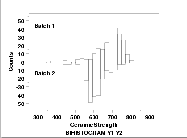
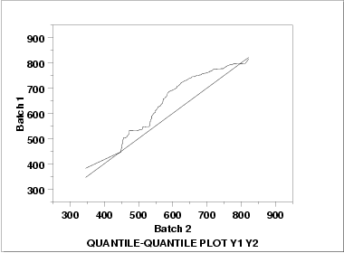
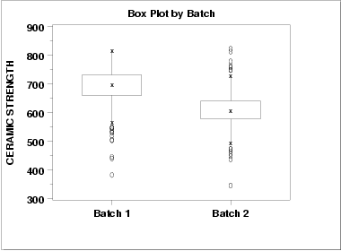
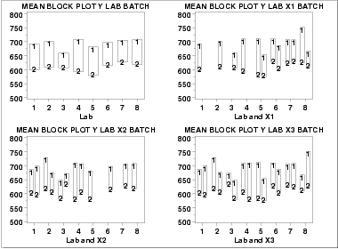

|
1.
Exploratory Data Analysis
1.4. EDA Case Studies 1.4.2. Case Studies 1.4.2.10. Ceramic Strength
|
|||
| Batch is a Nuisance Factor |
The two nuisance factors in this experiment are the batch number
and the lab. There are two batches and eight labs. Ideally, these
factors will have minimal effect on the response variable.
We will investigate the batch factor first. |
||
| Bihistogram |

This bihistogram shows the following.
Although we could stop with the bihistogram, we will show a few other commonly used two-sample graphical techniques for comparison. |
||
| Quantile-Quantile Plot |

This q-q plot shows the following.
|
||
| Box Plot |

This box plot shows the following.
|
||
| Block Plots |
A block plot is generated for each of the eight labs, with "1" and
"2" denoting the batch numbers. In the first
plot, we do not include any of the primary factors. The next 3
block plots include one of the primary factors. Note that each of
the 3 primary factors (table speed = X1, down feed rate = X2,
wheel grit size = X3) has 2 levels. With 8 labs and 2 levels for
the primary factor, we would expect 16 separate blocks on these
plots. The fact that some of these blocks are missing indicates
that some of the combinations of lab and primary factor are empty.
 These block plots show the following.
|
||
| Quantitative Techniques |
We can confirm some of the conclusions drawn from the above
graphics by using quantitative techniques. The
F-test can be used to test
whether or not the variances from the two batches are equal and the
two sample t-test can be used
to test whether or not the means from the two batches are equal.
Summary statistics for each batch are shown below.
Batch 1:
NUMBER OF OBSERVATIONS = 240
MEAN = 688.9987
STANDARD DEVIATION = 65.5491
VARIANCE = 4296.6845
Batch 2:
NUMBER OF OBSERVATIONS = 240
MEAN = 611.1559
STANDARD DEVIATION = 61.8543
VARIANCE = 3825.9544
|
||
| F-Test |
The two-sided F-test indicates that the variances for the two
batches are not significantly different at the 5 % level.
H0: σ12 = σ22
Ha: σ12 ≠ σ22
Test statistic: F = 1.123
Numerator degrees of freedom: ν1 = 239
Denominator degrees of freedom: ν2 = 239
Significance level: α = 0.05
Critical values: F1-α/2,ν1,ν2 = 0.845
Fα/2,ν1,ν2 = 1.289
Critical region: Reject H0 if F < 0.845 or F > 1.289
|
||
| Two Sample t-Test |
Since the F-test indicates that the two batch variances are equal,
we can pool the variances for the two-sided, two-sample
t-test to compare batch means.
H0: μ1 = μ2 Ha: μ1 ≠ μ2 Test statistic: T = 13.3806 Pooled standard deviation: sp = 63.7285 Degrees of freedom: ν = 478 Significance level: α = 0.05 Critical value: t1-α/2,ν = 1.965 Critical region: Reject H0 if |T| > 1.965The t-test indicates that the mean for batch 1 is larger than the mean for batch 2 at the 5 % significance level. |
||
| Conclusions |
We can draw the following conclusions from the above analysis.
This batch effect was completely unexpected by the scientific investigators in this study. Note that although the quantitative techniques support the conclusions of unequal means and equal standard deviations, they do not show the more subtle features of the data such as the presence of outliers and the skewness of the batch 2 data. |
||